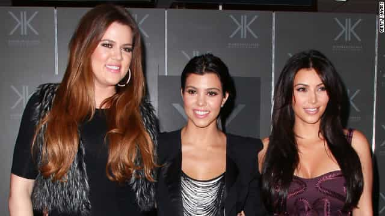

Bacon is a libertarian that enjoys spending his time in developing countries


To me the word rape has just about lost all of its meaning. Thanks to feminists and the “rape culture” propaganda it has been devalued and now I get very suspicious whenever I hear that someone was a “rape” victim. However, one thing that has never lost its impact on me is hearing about paternity fraud. This always angers me because I know these men will never get the justice real rape victims can hope to receive. I believe paternity fraud is in many ways a far more sinister, long lasting, humiliating and painful act than rape yet no one seems to see the polarization of how each of these crimes are treated and viewed by society at large.

When I was growing up I used to associate rape with Hollywood images of some recently released convict breaking into a woman’s home and brutally sexually abusing her and beating her up within an inch of her life. As I have gotten older, wiser and more skeptical I now know that scenario is the exception to the rule. Today in 2013 America, women can claim rape when both parties had sex under the influence of alcohol simply because she regretted it or did not like being “pumped and dumped.” In fact now I tend to think the worst about a woman who says she is a rape victim because I don’t know if her motives for claiming she was a victim of rape was an effort to get back at a guy, a cry for attention, or a combination of both.

The law as it is written with respect to rape goes above and beyond for women, leading many rape cases to go to trial with little evidence, all in an effort to show unwavering support for females. This legal bias has allowed women to get away with outright lying as the Duke Lacrosse rape case exemplifies and yet like the stripper in that case women still do not get in trouble for bringing false rape charges and ruining the lives of countless men. It must be nice for women to have so much support from the law with rape even when they are making up stories. Unfortunately, men are not afforded anywhere near the same support from the law in matters of paternity fraud.

Paternity fraud clearly meets the legal definition of fraud which under the law is defined as an intentional deception made for personal gain or to damage another individual. However, it is currently not considered fraud under the law (women do not receive prison time for defrauding a man into believing the child he is raising is his own). Why is the law absent? Why doesn’t it punish these criminals who are engaging in fraud by lying to a man about being the father of their kid?
Perhaps most painful of all is that when men find out that the child they are raising is not their own, they are almost always legally held responsible as the father even when DNA results prove otherwise. Try to image a scenario where a rape victim has to pay her rapist monthly checks for years after the crime. That would be unthinkable. So why are men who are victims of paternity fraud punished for years of having to write child support checks to the woman who defrauded him even after DNA testing has shown the kids are not his own?
While Maury Povich is out there doing God´s work exposing the scandalous nature of women who are trying to defraud men, this subject does not get enough attention. Paternity fraud is far more prevalent than one realizes. In fact, a 1999 study by the American Association of Blood Banks found that in 30 percent of 280,000 blood tests performed to determine paternity, the man tested was not the biological father. While that number is high because those people already had doubts about the paternity, it illustrates how common this is and that there are many men being victimized by women.
In popular culture one of the most blatant examples of alleged paternity fraud is Klohe Kardashian, who I would describe as an albino Sasquatch in comparison to her short olive toned sisters. Kris Jenner, her mother, admitted to an affair around the time of Klohe´s conception years after the alleged father, Robert Kardasian, passed away.
Another recent example was celebrity crime boss actor from The Wire Idris Elba, who after DNA testing learned he was not the father of his son. Elba describes the experience; “You know, the truth is—like, even admitting it, I’ll probably get laughed at for the rest of my life. But it is just tragic, and it happened.”

When compared to genuine rape cases, paternity fraud is more common yet society refuses to address just how much damage these female criminals are getting away with at the expense of the male victims. Just imagine the psychological impact of being deceived into raising a child that you believe to be yours for decades and the permanent reminder of the infidelity your partner committed. It’s easy to see why this crime is at least as damaging to the victim as rape, if not more.
The most egregious part of this crime is how callous the women are to the men they are victimizing. These women play on the man’s emotions like a true sociopath by saying things like “look the baby has your nose and ears” to help pull off the ruse. What makes these women so much worse than the rapist, who also gets a thrill from the power of dominating the victim, is that these women often convince the man to love them and the baby all the while laughing behind his back knowing they are controlling this sucker into loving and supporting another man’s kid.

Unfortunately I don’t think anything is going to be done about paternity fraud in the future so that it receives the same legal treatment as rape. But the point of this article was to highlight just how hypocritical society is when dealing with two different issues that are damaging to both genders. The only way to make sense of the law and its rulings on these matters is simply to conclude society still believes women are tall children. This is why when men and women both have sex while intoxicated the law views women not as real adults accountable for their own behavior so they are able to cry rape if they did not like the outcome of a drunken hook up. This also explains why women are able to commit paternity fraud on men yet never be punished for the crime because society feels they should not be held responsible for their criminal actions since, like children, they did not know better.
In closing I think readers should be aware that while rape is the number one fantasy of women, the fact is no man has erotic dreams of being a victim of paternity rape.
***For the purposes of this article all references to rape are pertaining to adult women. Child and male rape on heterosexual males are far worse crimes and are not to be included under the umbrella of the word rape for the purposes of this article.
 If you like this article and are concerned about the future of the Western world, check out Roosh's book Free Speech Isn't Free. It gives an inside look to how the globalist establishment is attempting to marginalize masculine men with a leftist agenda that promotes censorship, feminism, and sterility. It also shares key knowledge and tools that you can use to defend yourself against social justice attacks. Click here to learn more about the book. Your support will help maintain our operation.
If you like this article and are concerned about the future of the Western world, check out Roosh's book Free Speech Isn't Free. It gives an inside look to how the globalist establishment is attempting to marginalize masculine men with a leftist agenda that promotes censorship, feminism, and sterility. It also shares key knowledge and tools that you can use to defend yourself against social justice attacks. Click here to learn more about the book. Your support will help maintain our operation.
Read Next: Help Raise Awareness About Rape Tourette’s
{kind=link}